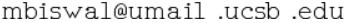

Monsij Biswal
PhD Student
I am a first year PhD student in the Electrical and Computer Engineering Department at University of California, Santa Barbara. I am fortunate to be advised by Prof. Yasamin Mostofi. My broad area of interest is Wireless Communication, Millimeter Waves and Signal Processing. Recently , I have been investigating the application of neural networks in these domains.
I graduated from the National Institute of Technology, Durgapur with a bachelors degree in Electronics and Communication Engineering. I was advised by Dr. Aniruddha Chandra for my undergraduate thesis.
Besides work, I am an aerophile and I occasionally sketch on Inkscape.